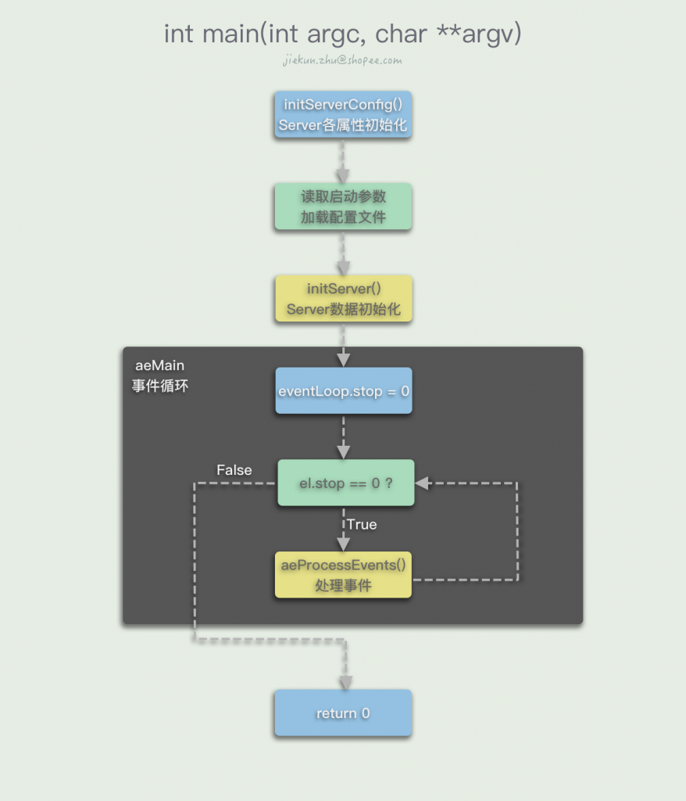
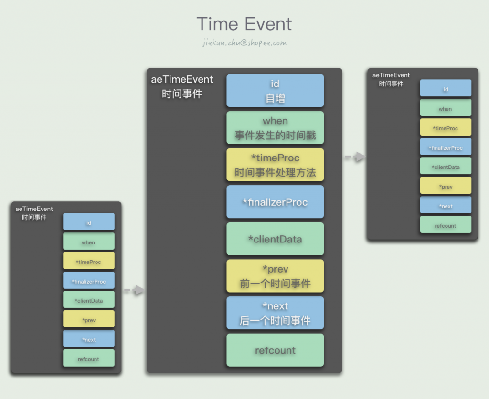
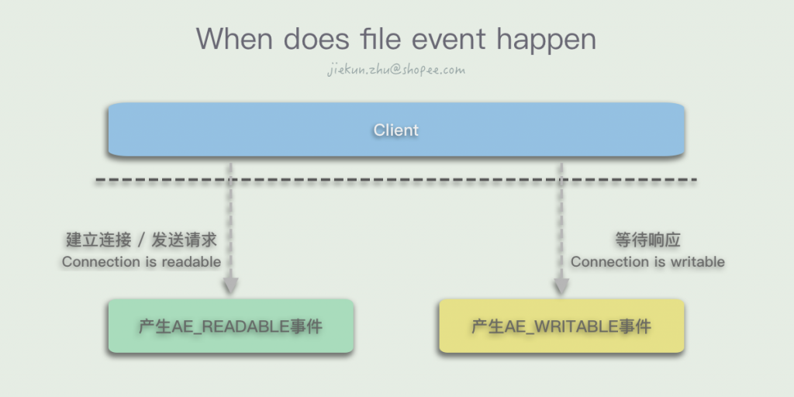
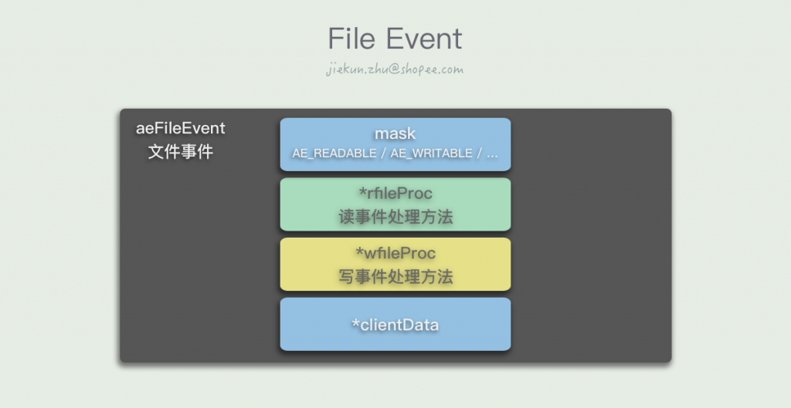
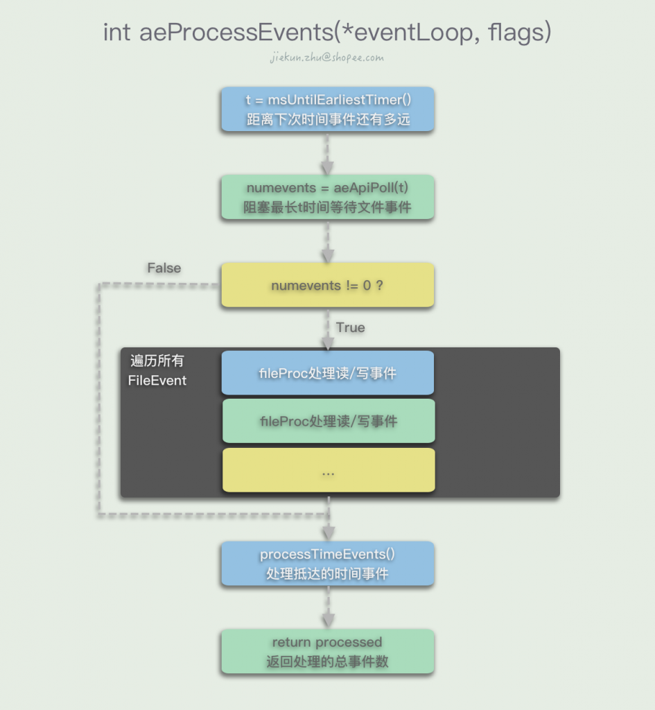
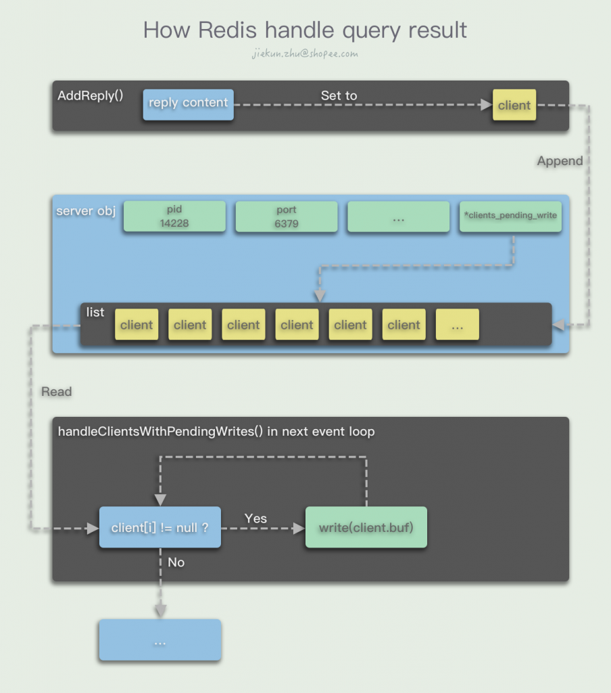
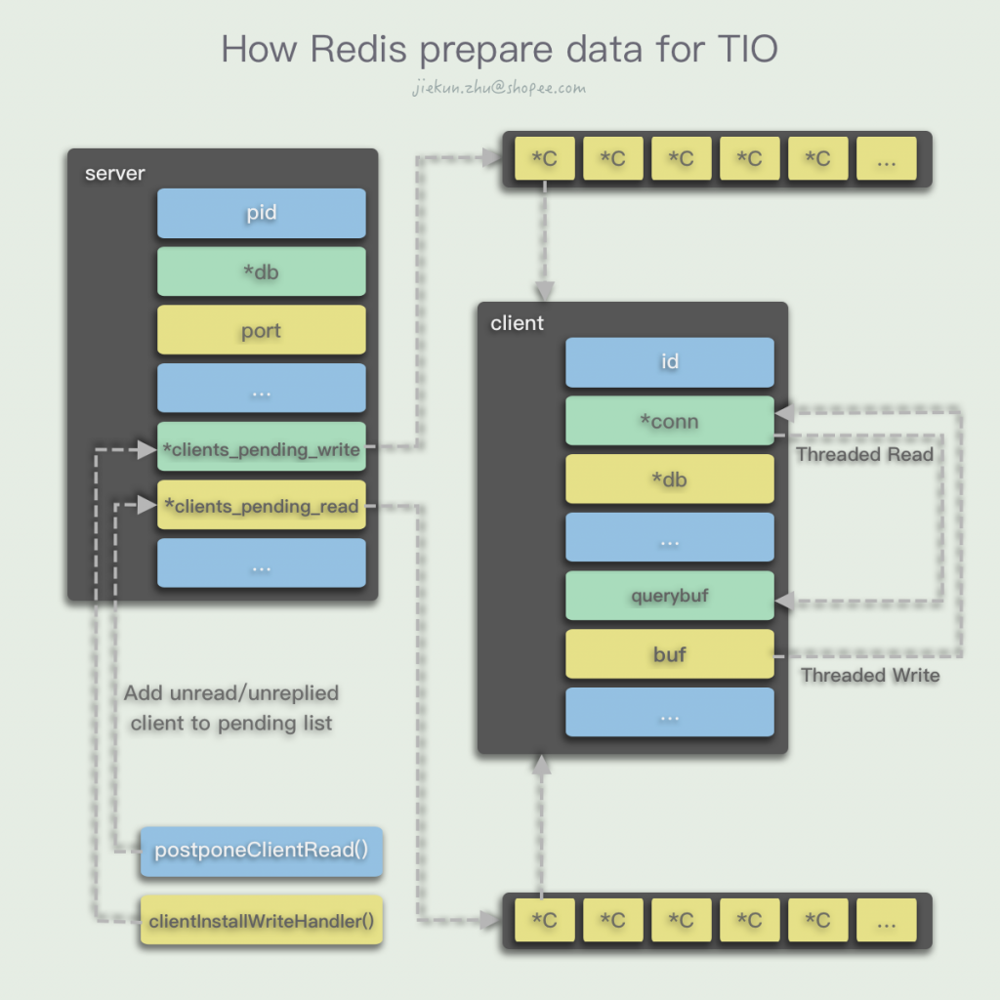
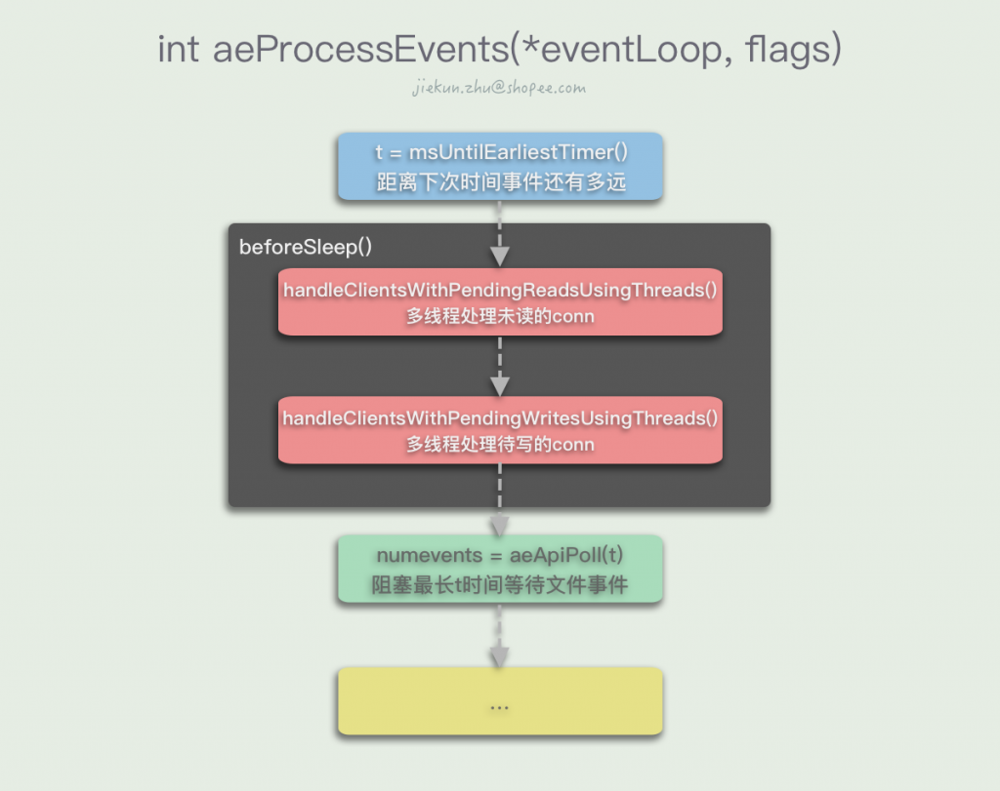
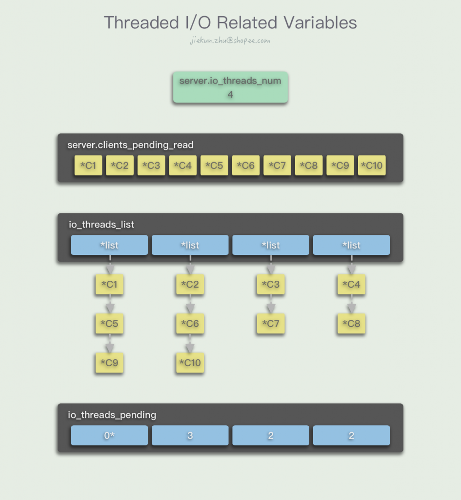
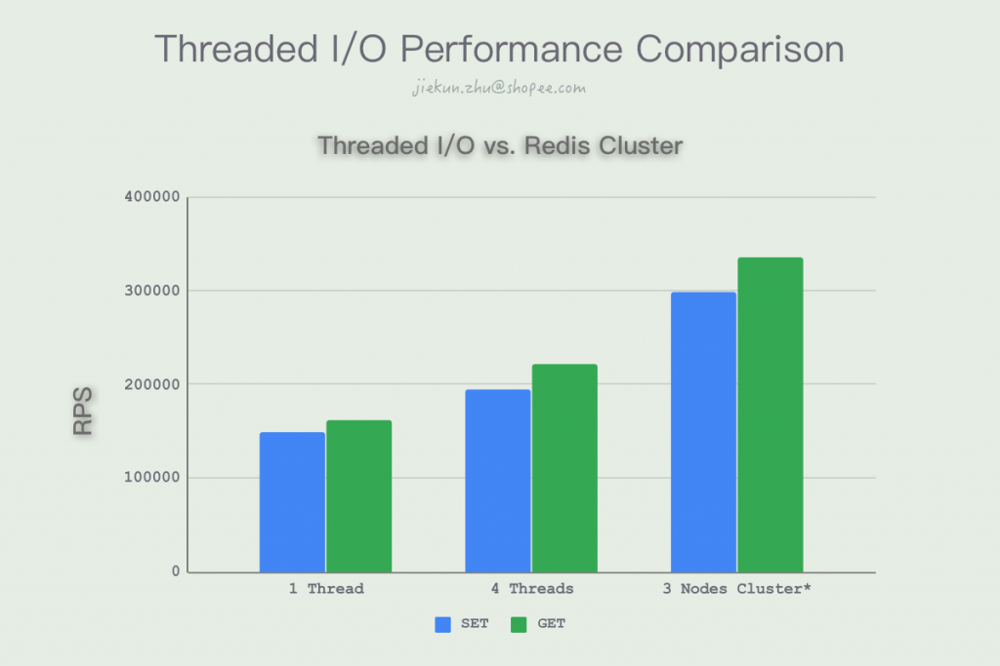

Introduction
Redis从6.0版本开始引入了Threaded I/O，目的是为了提升执行命令前后的网络I/O性能。本文会先从Redis的主流程开始分析，讲解网络I/O发生在哪里，以及现有的网络I/O模型，然后介绍Threaded I/O的新模型、实现以及生效场景，最后会进行场景测试，对比Threaded I/O关闭与开启，以及启用Threaded I/O与在单实例上搭建集群的性能差异。如果你已经了解过Redis的循环流程，可以直接跳至Threaded I/O相关的部分；如果你只关心新功能的实际提升，可以跳至性能测试部分查看。
Redis是如何运行的
事件循环
main
Redis的入口位于server.c下，main()方法流程如图所示。

在main()方法中Redis首先需要做的是初始化各种库以及服务配置。具体举例：
crc64_init()会初始化一个crc校验用的Lookup TablegetRandomBytes()为hashseed填充随机元素作为初始化值，用作哈希表的seed- …
initServerConfig()中执行了大量对server对象属性的初始化操作：- 初始化
server.runid，如16e05f486b8d41e79593a35c8b96edaff101c194 - 获取当前的时区信息，存放至
server.timezone中 - 初始化
server.next_client_id值，使得连接进来的客户端id从1开始自增 - …
- 初始化
ACLInit()是对Redis 6.0新增的ACL系统的初始化操作，包括初始化用户列表、ACL日志、默认用户等信息- 通过
moduleInitModulesSystem()和tlsInit()初始化模块系统和SSL等 - …
初始化结束后，开始读取用户的启动参数，和大多数配置加载过程类似，Redis也通过字符串匹配等分析用户输入的argc和argv[]，这个过程中可能会发生：
- 获取到配置文件路径，修改
server.configfile的值，后续用于加载配置文件 - 获取到启动选项参数，如
loadmodule和对应的Module文件路径，保存至options变量中
解析完参数之后，执行loadServerConfig()，读取配置文件并与命令行参数options的内容进行合并，组成一个config变量，并且逐个将name和value设置进configs列表中。对于每个config，有对应的switch-case的代码，例如对于loadmodule，会执行queueLoadModule()方法，以完成真正的配置加载：
...
} else if (!strcasecmp(argv[0],"logfile") && argc == 2) {
...
} else if (!strcasecmp(argv[0],"loadmodule") && argc >= 2) {
queueLoadModule(argv[1],&argv[2],argc-2);
} else if (!strcasecmp(argv[0],"sentinel")) {
...</code></pre>
回到main方法的流程，Redis会开始打印启动的日志，执行initServer()方法，服务根据配置项，继续为server对象初始化内容，例如：
- 创建事件循环结构体
aeEventLoop（定义在ae.h），赋值给server.el - 根据配置的db数目，分配大小为
sizeof(redisDb) * dbnum的内存空间，server.db保存这块空间的地址指针 - 每个db都是一个redisDb结构，将这个结构中的保存key、保存过期时间等的字典初始化为空dict
- …
此后就是一些根据不同运行模式的初始化，例如常规模式运行时会记录常规日志、加载磁盘持久化的数据；而在sentinel模式运行时记录哨兵日志，不加载数据等。
在所有准备操作都完成后，Redis开始陷入aeMain()的事件循环，在这个循环中会不断执行aeProcessEvents()处理发生的各种事件，直到Redis结束退出。
两种事件
Redis中存在有两种类型的事件：时间事件、文件事件。
时间事件也就是到了一定事件会发生的事件，在Redis中它们被记录成一个链表，每次创建新的事件事件的时候，都会在链表头部插入一个aeTimeEvent节点，其中保存了该事件会在何时发生，需要调用什么样的方法处理。遍历整个链表我们可以知道离最近要发生的时间事件还有多久，因为链表里面的节点按照自增id顺序排列，而在发生时间的维度上时乱序的。

文件事件可以看作I/O引起的事件，客户端发送命令会让服务端产生一个读I/O，对应一个读事件；同样当客户端等待服务端消息的时候需要变得可写，让服务端写入内容，因此会对应一个写事件。AE_READABLE事件会在客户端建立连接、发送命令或其他连接变得可读的时候发生，而AE_WRITABLE事件则会在客户端连接变得可写的时候发生。

文件事件的结构简单很多，aeFileEvent记录了这是一个可读事件还是可写事件，对应的处理方法，以及用户数据。

如果同时发生了两种事件，Redis会优先处理AE_READABLE事件。
aeProcessEvents
aeProcessEvents()方法处理已经发生和即将发生的各种事件。

在aeMain()循环进入aeProcessEvents()后，Redis首先检查下一次的时间事件会在什么时候发生，在还没有时间事件发生的这段时间内，可以调用多路复用的API aeApiPoll()阻塞并等待文件事件的发生。如果没有文件事件发生，那么超时后返回0，否则返回已发生的文件事件数量numevents。
在有文件事件可处理的情况下，Redis会调用AE_READABLE事件的rfileProc方法以及AE_WRITABLE事件的wfileProc方法进行处理：
...
if (!invert && fe->mask & mask & AE_READABLE) {
fe->rfileProc(eventLoop,fd,fe->clientData,mask);
fired++;
fe = &eventLoop->events[fd];
}
if (fe->mask & mask & AE_WRITABLE) {
if (!fired || fe->wfileProc != fe->rfileProc) {
fe->wfileProc(eventLoop,fd,fe->clientData,mask);
fired++;
}
}
...</code></pre>
在完成前面的处理后，Redis会继续调用processTimeEvents()处理时间事件。遍历整个时间事件链表，如果此时已经过了一段时间（阻塞等待或处理文件事件耗时），有时间事件发生，那么就调用对应时间事件的timeProc方法，将所有已经过时的时间事件处理掉：
...
if (te->when <= now) {
...
retval = te->timeProc(eventLoop, id, te->clientData);
...
processed++;
...
}
...</code></pre>
如果执行了文件事件之后还没有到最近的时间事件发生点，那么本次aeMain()循环中将没有时间事件被执行，进入下一次循环。
命令执行前后发生了什么
在客户端连接上Redis的时候，通过执行connSetReadHandler(conn, readQueryFromClient)，设置了当读事件发生时，使用readQueryFromClient()作为读事件的Handler。
在收到客户端的命令请求时，Redis进行一些检查和统计后，调用read()方法将连接中的数据读取进client.querybuf消息缓冲区中：
void readQueryFromClient(connection *conn) {
...
nread = connRead(c->conn, c->querybuf+qblen, readlen);
...
static inline int connRead(connection *conn, void *buf, size_t buf_len) {
return conn->type->read(conn, buf, buf_len);
}
static int connSocketRead(connection *conn, void *buf, size_t buf_len) {
int ret = read(conn->fd, buf, buf_len);
...
}</code></pre>
然后进入processInputBuffer(c)开始读取输入缓冲区中的消息，最后进入processCommand(c)开始处理输入的命令。
在命令执行得到结果后，首先会存放在client.buf中，并且调用调用addReply(client *c, robj *obj)方法，将这个client对象追加到server.clients_pending_write列表中。此时当次的命令，或者说AE_READABLE事件就已经基本处理完毕了，除了一些额外的统计数据、后处理以外，不会再进行发送响应消息的动作。

在当前aeProcessEvents()方法结束后，进入下一次的循环，第二次循环调用I/O多路复用接口等待文件事件发生前，Redis会检查server.clients_pending_write是否有客户端需要进行回复，若有，遍历指向各个待回复客户端的server.clients_pending_write列表，逐个将客户端从中删除，并将待回复的内容通过writeToClient(c,0)回复出去
int writeToClient(client *c, int handler_installed) {
...
nwritten = connWrite(c->conn,c->buf+c->sentlen,c->bufpos-c->sentlen);
...
static inline int connWrite(connection *conn, const void *data, size_t data_len) {
return conn->type->write(conn, data, data_len);
}
static int connSocketWrite(connection *conn, const void *data, size_t data_len) {
int ret = write(conn->fd, data, data_len);
...
}</code></pre>
Threaded I/O模型
I/O问题与Threaded I/O的引入
如果要说Redis会有什么性能问题，那么从I/O角度，由于它没有像其他Database一样使用磁盘，所以不存在磁盘I/O的问题。在数据进入缓冲区前及从缓冲区写至Socket时，存在一定的网络I/O，特别是写I/O对性能影响比较大。以往我们会考虑做管道化来减小网络I/O的开销，或者将Redis部署成Redis集群来提升性能。
在Redis 6.0之后，由于Threaded I/O的引入，Redis开始支持对网络读写的线程化，让更多的线程参与进这部分动作中，同时保持命令的单线程执行。这样的改动从某种程度上说可以既提升性能，但又避免将命令执行线程化而需要引入锁或者其他方式解决并行执行的竞态问题。
Threaded I/O在做什么
在老版本的实现中，Redis将不同client的命令执行结果保存在各自的client.buf中，然后把待回复的client存放在一个列表里，最后在事件循环中逐个将buf的内容写至对应Socket。对应在新版本中，Redis使用多个线程完成这部分操作。

对读操作，Redis同样地为server对象新增了一个clients_pending_read属性，当读事件来临时，判断是否满足线程化读的条件，如果满足，那么执行延迟读操作，将这个client对象添加到server.clients_pending_read列表中。和写操作一样，留到下一次事件循环时使用多个线程完成读操作。

Threaded I/O的实现与限制
Init阶段
在Redis启动时，如果满足对应参数配置，会进行I/O线程初始化的操作。
void initThreadedIO(void) {
server.io_threads_active = 0;
if (server.io_threads_num == 1) return;
if (server.io_threads_num > IO_THREADS_MAX_NUM) {
serverLog(LL_WARNING,"Fatal: too many I/O threads configured. "
"The maximum number is %d.", IO_THREADS_MAX_NUM);
exit(1);
}
...</code></pre>
Redis会进行一些常规检查，配置数是否符合开启多线程I/O的要求。
...
for (int i = 0; i < server.io_threads_num; i++) {
io_threads_list[i] = listCreate();
...</code></pre>
创建一个长度为线程数的io_threads_list列表，列表的每个元素都是另一个列表L，L将会用来存放对应线程待处理的多个client对象。
...
if (i == 0) continue;
...</code></pre>
对于主线程，初始化操作到这里就结束了。
...
pthread_t tid;
pthread_mutex_init(&io_threads_mutex[i],NULL);
io_threads_pending[i] = 0;
pthread_mutex_lock(&io_threads_mutex[i]); /* Thread will be stopped. */
if (pthread_create(&tid,NULL,IOThreadMain,(void*)(long)i) != 0) {
serverLog(LL_WARNING,"Fatal: Can't initialize IO thread.");
exit(1);
}
io_threads[i] = tid;
}
}
...</code></pre>
io_threads_mutex是一个互斥锁列表，io_threads_mutex[i]即第i个线程的锁，用于后续阻塞I/O线程操作，初始化之后将其暂时锁定。然后再对每个线程执行创建操作，tid即其指针，保存至io_threads列表中。新的线程会一直执行IOThreadMain方法，我们将它放到最后讲解。
Reads/Writes
多线程的读写主要在handleClientsWithPendingReadsUsingThreads()和handleClientsWithPendingWritesUsingThreads()中完成，因为两者几乎是对称的，所以这里只对读操作进行讲解，有兴趣的同学可以检查一下写操作有什么不同的地方以及为什么。
int handleClientsWithPendingReadsUsingThreads(void) {
if (!server.io_threads_active || !server.io_threads_do_reads) return 0;
int processed = listLength(server.clients_pending_read);
if (processed == 0) return 0;
if (tio_debug) printf("%d TOTAL READ pending clients\n", processed);
...</code></pre>
同样，Redis会进行常规检查，是否启用线程化读写并且启用线程化读（只开启前者则只有写操作是线程化），以及是否有等待读取的客户端。
...
listIter li;
listNode *ln;
listRewind(server.clients_pending_read,&li);
int item_id = 0;
while((ln = listNext(&li))) {
client *c = listNodeValue(ln);
int target_id = item_id % server.io_threads_num;
listAddNodeTail(io_threads_list[target_id],c);
item_id++;
}
...</code></pre>
这里将server.clients_pending_read的列表转化为方便遍历的链表，然后将列表的每个节点（*client对象）以类似Round-Robin的方式分配个各个线程，线程执行各个client的读写顺序并不需要保证，命令抵达的先后顺序已经由server.clients_pending_read/write列表记录，后续也会按这个顺序执行。
...
io_threads_op = IO_THREADS_OP_READ;
...</code></pre>
设置状态标记，标识当前处于多线程读的状态。由于标记的存在，Redis的Threaded I/O瞬时只能处于读或写的状态，不能部分线程读，部分写。
...
for (int j = 1; j < server.io_threads_num; j++) {
int count = listLength(io_threads_list[j]);
io_threads_pending[j] = count;
}
...</code></pre>
为每个线程记录下各自需要处理的客户端数量。当不同线程读取到自己的pending长度不为0时，就会开始进行处理。注意j从1开始，意味着``的主线程的pending长度一直为0，因为主线程马上要在这个方法中同步完成自己的任务，不需要知道等待的任务数。

...
listRewind(io_threads_list[0],&li);
while((ln = listNext(&li))) {
client *c = listNodeValue(ln);
readQueryFromClient(c->conn);
}
listEmpty(io_threads_list[0]);
...</code></pre>
主线程此时将自己要处理的client处理完。
...
while(1) {
unsigned long pending = 0;
for (int j = 1; j < server.io_threads_num; j++)
pending += io_threads_pending[j];
if (pending == 0) break;
}
if (tio_debug) printf("I/O READ All threads finshed\n");
...</code></pre>
陷入循环等待，pending等于各个线程剩余任务数之和，当所有线程都没有任务的时候，本轮I/O处理结束。
...
while(listLength(server.clients_pending_read)) {
ln = listFirst(server.clients_pending_read);
client *c = listNodeValue(ln);
c->flags &= ~CLIENT_PENDING_READ;
listDelNode(server.clients_pending_read,ln);
if (c->flags & CLIENT_PENDING_COMMAND) {
c->flags &= ~CLIENT_PENDING_COMMAND;
if (processCommandAndResetClient(c) == C_ERR) {
continue;
}
}
processInputBuffer(c);
}
...</code></pre>
我们已经在各自线程中将conn中的内容读取至对应client的client.querybuf输入缓冲区中，所以可以遍历server.clients_pending_read列表，串行地进行命令执行操作，同时将client从列表中移除。
...
server.stat_io_reads_processed += processed;
return processed;
}</code></pre>
处理完成，将处理的数量加到统计属性上，然后返回。
IOThreadMain
前面还有每个线程具体的工作内容没有解释，它们会一直陷在IOThreadMain的循环中，等待执行读写的时机。
void *IOThreadMain(void *myid) {
long id = (unsigned long)myid;
char thdname[16];
snprintf(thdname, sizeof(thdname), "io_thd_%ld", id);
redis_set_thread_title(thdname);
redisSetCpuAffinity(server.server_cpulist);
...</code></pre>
照常执行一些初始化内容。
...
while(1) {
for (int j = 0; j < 1000000; j++) {
if (io_threads_pending[id] != 0) break;
}
if (io_threads_pending[id] == 0) {
pthread_mutex_lock(&io_threads_mutex[id]);
pthread_mutex_unlock(&io_threads_mutex[id]);
continue;
}
serverAssert(io_threads_pending[id] != 0);
if (tio_debug) printf("[%ld] %d to handle\n", id, (int)listLength(io_threads_list[id]));
...</code></pre>
线程会检测自己的待处理的client列表长度，当等待队列长度大于0时往下执行，否则会到死循环起点。
这里利用互斥锁，让主线程有机会加锁，使得I/O线程卡在执行pthread_mutex_lock()，达到让I/O线程停止工作的效果。
...
listIter li;
listNode *ln;
listRewind(io_threads_list[id],&li);
while((ln = listNext(&li))) {
client *c = listNodeValue(ln);
if (io_threads_op == IO_THREADS_OP_WRITE) {
writeToClient(c,0);
} else if (io_threads_op == IO_THREADS_OP_READ) {
readQueryFromClient(c->conn);
} else {
serverPanic("io_threads_op value is unknown");
}
}
...</code></pre>
将io_threads_list[i]的客户端列表转化为方便遍历的链表，逐个遍历，借助io_threads_op标志判断当前是要执行多线程读还是多线程写，完成对自己要处理的客户端的操作。
...
listEmpty(io_threads_list[id]);
io_threads_pending[id] = 0;
if (tio_debug) printf("[%ld] Done\n", id);
}
}</code></pre>
清空自己要处理的客户端列表，并且将自己的待处理数量修改为0，结束本轮操作。
Limitation
通过查看代码，使用上Threaded I/O的启用受以下条件影响：
- 配置项
io-threads需要大于1，否则会继续使用单线程操作读写I/O - 配置项
io-threads-do-reads控制读I/O是否使用线程化 - 对于延迟读取，由
postponeClientRead()方法控制。方法中除了配置要求外，还需要当前client不能是主从模型的角色，也不能处于已经等待下次事件循环线程化读取（CLIENT_PENDING_READ）的状态。在这个方法中client对象会被添加到等待队列中，并且将client的状态改为CLIENT_PENDING_READ。 - 对于多线程写I/O，由
handleClientsWithPendingWritesUsingThreads()中的stopThreadedIOIfNeeded()方法加以限制。除了对应配置项要满足要求外，server.clients_pending_write的长度需要大于等于配置线程数的两倍，例如配置使用6线程，当写队列长度小于12时会继续使用单线程I/O。 - I/O线程在
initThreadedIO()被创建前，互斥锁处于加锁状态，因此线程不能进行实际的任务处理。server对象的io_threads_active属性默认会处于关闭状态，在进行首次多线程写之前才会被开启。这意味着服务启动后的读操作仍然会使用单线程读，产生执行结果到写的pending list中，在第二次循环中，服务判断是否有配置启用TIO，将server.io_threads_active属性打开，然后进行多线程写操作，从下一次循环开始TIO才能被作用于读操作上。上一点说过写I/O会有配置和队列长度判定，在判定不需要TIO写时，会重新把server.io_threads_active关闭，意味着尽管你已经在配置文件里面打开TIO读，但是Redis仍然会根据负载时不时跳过使用它。
性能测试
我们编译了unstable版本的Redis进行性能测试，测试工具为Redis自带的redis-benchmark，统计输出的RPS值作为参考。
Server实例: AWS / m5.2xlarge / 8 vCPU / 32 GB
Benchmark Client实例: AWS / m5.2xlarge / 8 vCPU / 32 GB
Command: redis-benchmark -h 172.xx.xx.62 -p 6379 -c 100 -d 256 -t get,set -n 10000000 --threads 8</code></pre>
Threaded I/O off vs. Threaded I/O on
我们对比了原有的单线程I/O以及开启2线程/4线程的Threaded I/O时的表现，结果如图所示。
在开启io-threads-do-reads选项的情况下，Threaded I/O作用于读操作，也能让性能有进一步提升，但是没有将写I/O线程化提升明显。另外我们还尝试使用了大体积Payload（-d 8192）进行测试，得出结果的提升百分比并没有太大差异。
Threaded I/O vs. Redis Cluster
以往开发者会通过在单台实例上部署Redis Cluster来尝试让Redis使用上更多的CPU资源，我们也尝试对比了一下这种情景下的表现。

在新版本中，redis-benchmark也得到了更新，开始支持对Redis Cluster的测试，通过开启--cluster参数即可检测集群模式和配置。我们在这一组对比测试中看到单实例构建集群的强大性能，在实际测试中，3个进程的CPU使用率均在80%-90%，说明仍有提升的空间。当改用测试参数-c 512时，集群能够跑出超过40万RPS的成绩。尽管测试与实际使用会有所区别，并且我们在构建集群的时候选择了不附带Slave，但是仍然能看出来在几种模型中，构建Cluster能真正使用上多线程进行网络I/O、命令执行，对性能的提升也是最大的。
总结与思考
Redis 6.0引入的Threaded I/O，将Socket读写延迟和线程化，在网络I/O的方向上给Redis带来了一定的性能提升，并且使用门槛比较低，用户无需做太多的变更，即可在不影响业务的情况下白嫖空闲的线程资源。
另一方面，从测试结果上看，这部分的提升可能还难以让处于Redis 5甚至Redis 3版本的用户有足够的动力进行升级，特别是考虑到很多业务场景中Redis的性能并没有差到成为瓶颈，而且新版本的福利也未经过大规模验证，势必会影响到企业级应用中更多用户关注的服务稳定性。同时，TIO的提升对比集群性能似乎还有一定的差距，这可能更加会让原本就处于集群架构的企业用户忽略这个功能。
但无论如何，用户肯定乐于见到更多的新功能、更多优化提升出现在Redis上。在保持一贯稳定性的前提下，本次的版本可以说是Redis从诞生至今最大的更新，不只有Threaded I/O，包括RESP3、ACLs和SSL，我们期待这些新Feature能够在更多的应用场景下得到推广、验证和使用，也希望未来的版本能够给用户带来更多的惊喜和更好的体验。
Further Reading: Understanding Redis
作为一位从来没有使用过C/类C语言的开发者，Redis简洁的代码和详尽的注释为我阅读和理解其实现提供了极大的帮助。在文末我想要分享一下自己学习Reids的一些途径、工具和方法。
README.md应该是我们了解Redis的入口，而不是全局搜索main()方法。请关注Redis internals小节下的内容，这里介绍了Redis的代码结构，Redis每个文件都是一个“general idea”，其中server.c和network.c的部分逻辑和代码在本文已经介绍过了，持久化相关的aof.c和rdb.c、数据库相关的db.c、Redis对象相关的object.c、复制相关的replication.c等都值得留意。其他包括Redis的命令是以什么样的形式编码的，也能在README.md中找到答案，这样可以方便我们进一步阅读代码时快速定位。
Documentation主页和redis-doc repo是Redis文档的集合处，请注意后者的topics目录下有非常多有趣的主题，我对“有趣”的定义是像这样的文章：
作为开发者，在深入学习的阶段，这些内容能让大家从“使用”变为“了解”，然后发现Redis原来能做更多的事情。所以如果缺乏时间阅读和调试源码，将topics下的60多篇文档看一遍，大概是了解Redis最快的方法。
最后，如果你能看到这里，大概也会对Redis的源码有那么一点兴趣。因为本身并不了解C语言，所以我大概率会选择借助一个IDE，在main()打上断点，然后流程的起点开始看，实际上我也确实是这么做的。另外几个代码的关键点，其实也在本文中出现过：
main()，起点initServer()，初始化aeMain()，事件循环readQueryFromClient()，读事件的HandlerprocessInputBuffer()，命令处理的入口
如果像本文一样想了解Network的内容，可以在aeMain()处打断点，然后关注中network.c中的方法；如果想关注具体命令相关的内容，可以在processInputBuffer()处打断点，然后关注$command.c或者类似文件中的方法，README.md文件里也已经介绍过命令方法的命名格式，定位非常容易。其余经常出现的其他动作，例如持久化、复制等，大概会出现在命令执行的前后，或者时间事件内，也可能在beforeSleep()中。server.h中定义的redisServer和client是Redis中两个非常重要的结构，在业务上很多内容都是转化为对它们的属性的相关操作，要特别留意。
除此以外，Antirez曾经在Youtube上发布过一些开发的录播视频，RedisLab则有一些相对冷门使用场景的实践介绍，这些会比上面的其他学习来得更轻松些，最大的难处可能就是听懂演讲者们的口音，特别是Antirez本人，万幸Youtube的字幕功能非常强大，能解决不少麻烦。